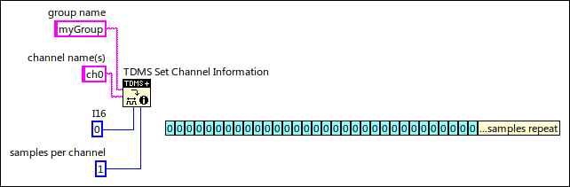
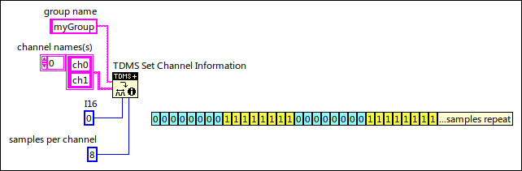
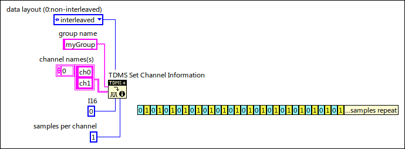
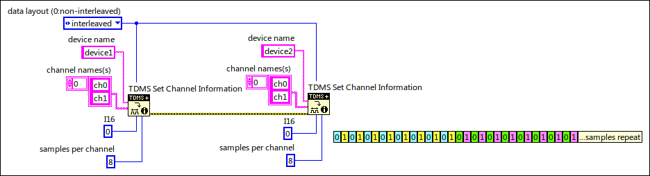

Defines the channel information of the raw data that you want to write to the specified .tdms file. The channel information includes the data layout, name of the group, names of the channels, data type, and number of samples.
Note If you use this function multiple times in an application, the order in which you use this function determines the order of channels and groups that you write to a .tdms file.
data layout specifies the arrangement of the data that you want to stream to a .tdms file. You must use the same data layout for each channel under the same group.
0
non-interleaved (default)—Specifies that the input data prioritizes channels before samples. This arrangement first lists all samples from the first channel, then all samples from the second channel, and so on through the last channel. The following table shows a typical example of the non-interleaved data layout.
Channel 0—Sample 1
Channel 0—Sample 2
...
Channel 0—Sample N
Channel 1—Sample 1
Channel 1—Sample 2
...
Channel 1—Sample N
Channel 2—Sample 1
Channel 2—Sample 2
...
Channel 2—Sample N
1
interleaved—Specifies that the input data prioritizes samples before channels. This arrangement lists the first sample from every channel, then the second sample from every channel, and so on through the last sample from every channel. The following table shows a typical example of the interleaved data layout.
Channel 0—Sample 1
Channel 1—Sample 1
Channel 2—Sample 1
Channel 0—Sample 2
Channel 1—Sample 2
Channel 2—Sample 2
...
Channel 0—Sample N
Channel 1—Sample N
Channel 2—Sample N
tdms file specifies a reference number to the .tdms file on which to perform the operation. Use the TDMS Advanced Open function to open the refnum.
group name specifies the group name for the channel. If you do not wire data to this input or if you wire an empty string to this input, this function uses Untitled as the group name.
channel name(s) specifies the names for the channels.
error in describes error conditions that occur before this node runs. This input provides standard error in functionality.
data type specifies the type of data on which you want to perform the operation. This input accepts integers, floating-point numbers, Booleans, and timestamps.
Note You can wire the following floating-point numbers to this input:
Single-precision and double-precision floating-point numbers
Complex single-precision and double-precision floating-point numbers
The following use cases demonstrate how the TDMS Set Channel Information function arranges raw data according to the data layout input.
Single Group, Single Channel (Non-Interleaved)

The data layout in the file is consecutive samples per channel. In the previous figure, a single 16-bit numeric or I16 sample follows another I16 sample, which follows another I16 sample, and so on. You can write as many I16 samples as you want. For example, you can write one million I16 samples or two million I16 samples at a time.
Single Group, Multiple Channels (Non-Interleaved)

The data layout is 8 consecutive samples per channel. In the previous figure, the data layout is eight I16 samples for the ch0 channel, eight I16 samples for the ch1 channel, and so on.
Single Group, Multiple Channels (Interleaved)

In the previous figure, the data layout is an I16 sample for the ch0 channel followed by an I16 sample for the ch1 channel. This pair repeats in the file. The total file size or the NI_ChannelLength property determines how often the pair repeats.
The data layout is 8 consecutive samples per channel per group or device. In the previous figure, the data layout contains eight I16 samples for the ch0 channel for device1, eight I16 samples for the ch1 channel for device1, eight I16 samples for the ch0 channel for device2, eight I16 samples for the ch1 channel for device2, and so on.
Multiple Group, Multiple Channels (Interleaved)

In the previous figure, the data layout is 8 pairs of an I16 sample for the ch0 channel and an I16 sample for the ch1 channel of device1. Following the 8 pairs is 8 pairs of an I16 sample for the ch0 channel and an I16 sample for the ch1 channel of device2. This pattern repeats in the file.
Refer to the TDMS Advanced Append Multiple Headers VI in the labview\examples\File IO\TDMS\Advanced Read and Write\Asynchronous Read and Write directory for an example of using the TDMS Set Channel Information function.

 Add to the block diagram
Add to the block diagram Find on the palette
Find on the palette